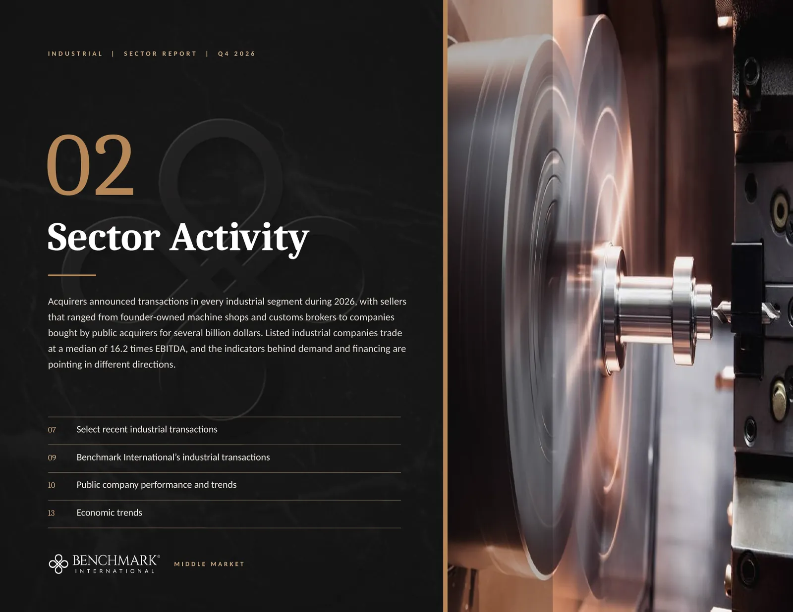
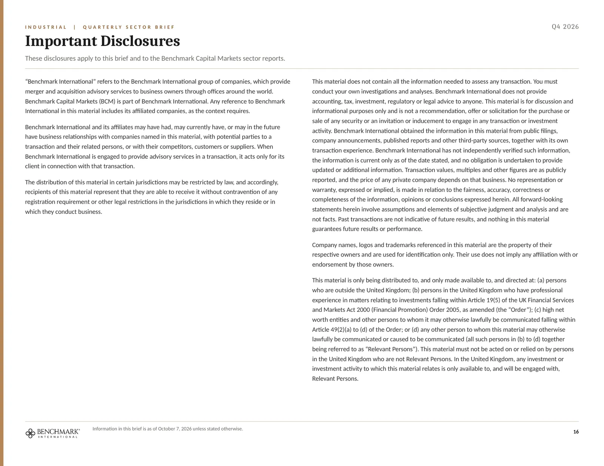

This is the Industrial Q4 2026 sector brief, page by page, exactly as it appears in the PDF. Links on each page open their sources, and the text of every page, with its tables and chart data, is below each page.
Read the text of this page
MIDDLE MARKET
QUARTERLY SECTOR BRIEF | Q4 2026
INDUSTRIAL
Order books are full, the deal market has become more selective and buyers are paying the most for power, data center, aerospace and service revenue.
Manufacturing & Industrial Technology
Industrial Distribution & Services
Building Products & Construction Services
Energy, Power & Environmental Services
Transportation & Logistics
WHAT’S INCLUDED
Insights
Market insights, the power demand buildout and a featured engagement
Sector Activity
Recent transactions, public company valuation and operating metrics, and economic trends
Connect With Us
The Middle Market industrial team
October 2026 | Jared Hardin, Managing Director
Read the text of this page
American manufacturing has expanded for nine consecutive months, and acquirers in every industrial segment are buying capacity that already exists because skilled labor is scarce and new equipment takes a long time to arrive. Borrowing costs rose in September, and buyers have become more selective about what they pay for.
Market insights for the fourth quarter of 2026
Power demand: the buildout reaches every industrial segment
Featured engagement: The Carmi Companies
Read the text of this page
Demand is broad, buyers are organized around platforms and financing became more expensive in September.
WHAT IT MEANS FOR OWNERS
Strategic acquirers and private equity platforms are still buying machining, distribution, contracting, environmental and logistics capacity that already exists.
They are paying the most for companies tied to power, data centers, aerospace and service work that codes and regulations require.
Domestic manufacturing demand is broad
The ISM Manufacturing PMI was 54.5 in September, its ninth consecutive month of expansion, and orders for manufacturing technology reached $4.03 billion in the first seven months of the year, 37.1% ahead of 2025 (ISM; AMT data reported by MDM). Capacity utilization of 75.7% leaves most plants room to take on more work (Federal Reserve G.17).
54.5
ISM Manufacturing PMI, September
Private equity is buying through platforms it already owns
Add-on acquisitions made up about three-quarters of all buyouts in the second quarter (PitchBook), and Pye-Barker Fire & Safety completed 22 acquisitions in the first half of the year alone (Pye-Barker). The sponsor at the table for a founder-owned industrial company is usually an operating platform that already knows its trade.
13,509
US companies held by private equity
Power and data center work is the strongest source of demand
Quanta Services ended June with a backlog of $53.4 billion against $35.8 billion a year earlier (Quanta Services). Public infrastructure funding is less certain, because the surface transportation authorization expired on September 30 and highway programs are running under a continuing resolution through December 11 (AASHTO Journal).
$53.4B
Quanta Services total backlog June 2026
Recurring service revenue is valued above project revenue
APi Group is working toward 60% of revenue from inspection and service, and Transcat’s service revenue grew 27% (APi Group; Transcat). Buyers pay more for service, repair, inspection and aftermarket parts revenue when an owner reports it separately from project and product sales, with the renewal history behind it.
60%
APi Group target for inspection and service revenue
Financing costs more and buyers are more selective
Global M&A value fell 41% from the second quarter to $993 billion in the third, and the Federal Reserve raised its target range to 3.75% to 4.00% on September 16 (LSEG data reported by Reuters; Federal Reserve). GF Data’s average multiple eased to 7.0 times trailing adjusted EBITDA from 7.3 times, and debt on platform acquisitions fell to 2.9 times from 3.4 times (GF Data via ACG).
7.0x
Average middle-market multiple of EBITDA, Q2
Figures are as reported by the linked sources. Middle-market multiple and debt figures are GF Data sponsor-reported averages for the first and second quarters of 2026.
Read the text of this page
Electricity demand is growing about 2% a year, the equipment to meet it is sold out years ahead and acquirers are buying existing capacity.
The Energy Information Administration expects US electricity sales to grow about 2% in 2026 and again in 2027, driven by data center development and commercial and industrial activity (EIA). NERC raised its 10-year forecast of summer peak demand growth to 224 gigawatts from 132 (POWER Magazine), and Meta alone expects capital expenditures of $130 billion to $145 billion in 2026 (Meta).
The equipment needed to meet that demand is committed years ahead. GE Vernova’s gas turbine backlog and slot reservations rose to 116 gigawatts from 100 during the second quarter (GE Vernova), and lead times for generator step-up transformers reached 160 weeks in the first quarter (Reuters, citing Wood Mackenzie). Generac’s commercial and industrial sales grew 29% and its data center backlog reached about $1.6 billion (Generac).
AI Bottleneck Is Power, Not Chips
“So, it’s interesting as they continue to announce all the data centers and data center sites. I’ve sort of always had a strong view that energy would be the constraint.” Greg Abel, CEO, Berkshire Hathaway (CNBC)
“Well, I don’t think it's going to come down to chips or the models that people create or the apps that we develop. I think the consistent theme you hear here is can we get the power generation to power these massive data centers.” Toby Rice, CEO, EQT (EQT Corporation)
“quite frankly, the biggest issue we are now having is not a compute glut, but it’s a power and it's sort of the ability to get the builds done fast enough close to power. So, if you can't do that, you may actually have a bunch of chips sitting in inventory that I can’t plug in.” Satya Nadella, CEO, Microsoft (Bg2 Pod)
HOW THE DEMAND REACHES EACH SEGMENT
MANUFACTURING & INDUSTRIAL TECHNOLOGY
nVent agreed to buy Maverick Power, a Texas maker of switchgear and modular power for data centers, for $1.75 billion plus up to $550 million, and put the upfront payment at 11.5 times anticipated 2026 adjusted EBITDA (nVent).
INDUSTRIAL DISTRIBUTION & SERVICES
EMCOR’s US Industrial Services segment grew 25.9% in the second quarter (EMCOR), and contractors with power, utility and data center customers have kept growing in a year when refiners deferred turnaround work to 2027.
BUILDING PRODUCTS & CONSTRUCTION SERVICES
Contractors doing data center work reported 9.9 months of backlog against 8.3 months for those that are not (ABC). Limbach lowered its guidance after its gross margin fell to 21.5% from 28.0%, citing competition for skilled labor and materials in data center markets (Limbach).
ENERGY, POWER & ENVIRONMENTAL SERVICES
Mission Critical Group bought a Texas switchgear manufacturer and a transformer supplier within four months of each other (Dallas Innovates; Distribution Strategy Group), and electrical testing and commissioning is the most contested category in the power sub-sector.
TRANSPORTATION & LOGISTICS
Spending on data center construction was more than 73% higher in August than a year earlier (ABC analysis reported by MDM), and JK Technology Services bought a Virginia rigging company that works in data centers (Vertikal).
THE BUILDOUT IN FOUR FIGURES
224 GW
NERC 10-year forecast of summer peak demand growth, raised from 132
116 GW
GE Vernova gas turbine backlog and slot reservations
160 weeks
Lead time for generator step-up transformers
9.9 months
Backlog at contractors doing data center work
A buyer will ask how much of the backlog is tied to funded power and data center work, and whether the company has the technicians to perform it at the margins it has earned so far.
Transaction values and multiples are as stated by the acquirer in the linked announcement. Backlog figures are from company second-quarter reports and the ABC member survey for August 2026.
Read the text of this page
A Laredo logistics and customs brokerage group and a Mexico manufacturing services company have combined to form an end-to-end cross-border platform.
BENCHMARK INTERNATIONAL ADVISED
THE CARMI COMPANIES
ON ITS TRANSACTION WITH
THE NEARSHORE COMPANY
Transportation & Logistics
Cross-border freight, customs brokerage and warehousing
THE CLIENT
The Carmi Companies
Founded in 1983 in Laredo, Texas, The Carmi Companies is a single-source logistics group that coordinates land, air and ocean freight and provides customs brokerage, warehousing and transloading.
THE COUNTERPARTY
The Nearshore Company
Founded in 1992 in Brownsville, Texas, The Nearshore Company offers manufacturing facilities in Mexico together with employer-of-record services.
THE RATIONALE
An end-to-end cross-border platform
The combination pairs The Nearshore Company’s Mexico manufacturing facilities and employer-of-record services with Carmi’s logistics to form an end-to-end cross-border platform.
THE MARKET
Buyers are paying for border capability
Trade with Mexico reached a monthly record of $94.8 billion in July, 27.5% above a year earlier, and $35.9 billion of it moved through Port Laredo (Census data reported by FreightWaves). Logistics platforms have responded by buying brokers at the border, and Redwood Logistics and Imperative Logistics Group each acquired a founder-owned customs broker in Laredo this year (FreightWaves on EELCO; FreightWaves on Jose D. Gonzalez, CHB).
“The simplest way to describe today’s market is that buyers are acquiring capabilities rather than capacity.”
Gaurang Shastri, Managing Director, Lincoln International, speaking to Transport Topics (Lincoln International)
BENCHMARK IN THIS SEGMENT
3
transactions closed in the past 24 months
14
engagements in progress
TALK WITH THE TEAM
Jared Hardin
MANAGING DIRECTOR
Jordan Houtz
MANAGING DIRECTOR
Company descriptions are from the announcement on benchmarkintl.com. Benchmark International counts are for the 24 months to September 30, 2026 and for engagements in progress as of October 1, 2026.

Read the text of this page
Acquirers announced transactions in every industrial segment during 2026, with sellers that ranged from founder-owned machine shops and customs brokers to companies bought by public acquirers for several billion dollars. Listed industrial companies trade at a median of 16.2 times EBITDA, and the indicators behind demand and financing are pointing in different directions.
Select recent industrial transactions
Benchmark International’s industrial transactions
10
Public company performance and trends
13
Economic trends
Read the text of this page
Public acquirers disclosed prices of about 6 to 10 times EBITDA, and sponsor-owned platforms bought family-owned companies on undisclosed terms.
| ANNOUNCED | TARGET AND ACQUIRER | BUSINESS AND TERMS | WHAT IT SHOWS |
|---|---|---|---|
| SEPTEMBER 2026 Manufacturing & Industrial Tech | CAT PUMPS acquired by FRANKLIN ELECTRIC | Franklin Electric acquired Cat Pumps, a Minneapolis maker of high-pressure pumps, for $350 million in cash plus up to $50 million in stock (Franklin Electric). | The upfront payment equals about 7.8 times 2025 adjusted EBITDA, by our calculation, for a business with a margin above 35%. |
| JULY 2026 Manufacturing & Industrial Tech | ADVANCE MFG. CO. acquired by PRECINMAC Centerbridge Partners | Precinmac acquired Advance Mfg. Co. of Westfield, Massachusetts, family-owned since 1961, which supplies machined components, fabrications and Nadcap coating for defense and aerospace customers (Precinmac). Terms were not disclosed. | Sponsor-owned platforms are assembling certified aerospace and defense machining capacity, and Precinmac had acquired Precision Aerospace Holdings of Dallas in April. |
| JULY 2026 Distribution & Services | FLOWORKS acquired by FERGUSON | Ferguson agreed to buy FloWorks, a flow control distributor with about $1 billion of revenue, from Wynnchurch Capital for $1.6 billion and completed the purchase in August (MDM). | Ferguson described the price as about 10 times trailing adjusted EBITDA after including roughly $45 million of expected synergies (MDM). |
| JULY 2026 Distribution & Services | METROPLEX WELDING SUPPLY acquired by MERITUS GAS PARTNERS AEA Investors | Meritus Gas Partners acquired Metroplex Welding Supply of Dallas, a family-owned distributor of industrial gases and welding supplies founded in 1975 with five locations (MDM). Terms were not disclosed. | Meritus has announced at least five acquisitions in 2026, four of them since July, and nearly every product line now has a specialist acquirer of this kind. |
| SEPTEMBER 2026 Building Products & Construction | 1901 INC. acquired by LIMBACH HOLDINGS | Limbach acquired 1901 Inc., a mechanical, electrical and plumbing contractor in Madison, Wisconsin, that it expects to contribute about $140 million of revenue, for $63 million plus an earn-out of up to $6 million (Pulse 2.0). | The upfront payment is about 5.7 times expected 2027 adjusted EBITDA, by our calculation, just below the 6 to 9 times at which project-based contractors have traded. |
Transaction values and multiples are as reported by the linked source or calculated from the figures it gives. Company names are the property of their owners and are shown for identification. Transactions advised by Benchmark International appear on page 9.
Read the text of this page
Buyers in power, environmental services and logistics paid for technicians, permits, equipment supply and border capability they did not already have.
| ANNOUNCED | TARGET AND ACQUIRER | BUSINESS AND TERMS | WHAT IT SHOWS |
|---|---|---|---|
| AUGUST 2026 Building Products & Construction | CLARK RIGGING & RENTAL acquired by BAY CRANE | Bay Crane acquired Clark Rigging & Rental, a crane rental, rigging and heavy-haul company in upstate New York that had been family-owned since 1954 (RER). Terms were not disclosed. | Crane, rigging and pump rental each have an active acquirer buying family-owned regional operators. |
| AUGUST 2026 Energy, Power & Environmental | ENVIROSERVE acquired by CLEAN HARBORS | Clean Harbors agreed to buy EnviroServe, a remediation, industrial cleaning and emergency response company with 40 locations, from One Rock Capital Partners for $470 million (Waste Advantage). | The agreement followed Clean Harbors’ $305 million deal for ES&H, which it described as 8.7 times EBITDA after synergies (Clean Harbors). |
| JULY 2026 Energy, Power & Environmental | CORE TRANSFORMERS acquired by MISSION CRITICAL GROUP Emerald Lake Capital Management | Mission Critical Group acquired CORE Transformers, a founder-led supplier of new, made-to-order and remanufactured power transformers (Distribution Strategy Group). Terms were not disclosed. | It was the buyer’s second power equipment purchase in four months, after the Texas switchgear maker TxLa Systems. |
| OCTOBER 2026 Transportation & Logistics | RXO acquired by C.H. ROBINSON | C.H. Robinson agreed on October 5 to acquire RXO, a truck brokerage, managed transportation and last-mile provider, at an implied value of $5.8 billion, a 29% premium to RXO’s last closing price (C.H. Robinson and RXO). | About $300 million of expected annual cost savings supports the price at the top of the brokerage market. |
| MARCH 2026 Transportation & Logistics | EELCO acquired by REDWOOD LOGISTICS AEA Investors | Redwood Logistics acquired EELCO, a Laredo, Texas, customs brokerage with a foreign-trade-zone warehouse that had been founder-owned since 1991 (FreightWaves). Terms were not disclosed. | Logistics platforms are buying brokers at the border as trade with Mexico sets monthly records. |
Transaction values and multiples are as reported by the linked source or calculated from the figures it gives. Company names are the property of their owners and are shown for identification. Two transactions are shown for each of the five industrial segments across pages 7 and 8.
Read the text of this page
Building products and construction services is the most active segment, and strategic acquirers were the buyers in more than half of the sales.
TRAILING 24 MONTHS
85
industrial transactions closed in the five segments
212
industrial engagements in progress as of October 1, 2026
56%
of the 71 companies with a classified buyer were bought by a strategic acquirer
Ranked the leading privately owned sell-side M&A advisor in the world in PitchBook’s Q2 2026 Global League Tables (Benchmark International).
BY SEGMENT
| In progress | Closed | |
|---|---|---|
| Transportation & Logistics | 14 | 3 |
| Energy, Power & Environmental | 28 | 7 |
| Building Products & Construction | 118 | 45 |
| Distribution & Services | 24 | 8 |
| Manufacturing & Industrial Tech | 28 | 22 |
WHO BOUGHT
| Strategic acquirer | 40 | 56% |
|---|---|---|
| Sponsor-owned platform | 13 | 18% |
| Financial sponsor | 10 | 14% |
| Individual investor | 8 | 11% |
SELECTED ANNOUNCED ENGAGEMENTS
HAS BEEN ACQUIRED BY
CINTAS CORPORATION
Fire suppression and detection systems
DISTRIBUTION & SERVICES
HAS BEEN ACQUIRED BY
DXP ENTERPRISES, INC.
Sales, repair and maintenance of industrial vacuum pumps
MANUFACTURING
Trinity Industrial Services, LLC
HAS BEEN ACQUIRED BY
AECON GROUP INC.
Industrial maintenance, capital projects and turnarounds
DISTRIBUTION & SERVICES
HAS BEEN ACQUIRED BY
CEMTREX, INC.
Instrumentation and wireless sensing for aerospace platforms
MANUFACTURING
HAS BEEN ACQUIRED BY
HARRIS COMPANY
Commercial HVAC and building automation
BUILDING & CONSTRUCTION
HAS BEEN ACQUIRED BY
PHENNA GROUP
Geotechnical and materials testing and special inspection
BUILDING & CONSTRUCTION
Capitol Plastics Recycling Inc.
HAS BEEN ACQUIRED BY
TRIUMVIRATE ENVIRONMENTAL
Industrial plastics recycling
ENERGY & ENVIRONMENTAL
HAS BEEN ACQUIRED BY
APEX WATER AND PROCESS INC.
Water treatment chemical production and service
ENERGY & ENVIRONMENTAL
HAS BEEN ACQUIRED BY
TIPCO TECHNOLOGIES
Hose and hose assemblies for industrial customers
DISTRIBUTION & SERVICES
A.T. Parker, Inc. (Solar Electronics)
HAS BEEN ACQUIRED BY
ASSESSIMUS GROUP GMBH
Test equipment for electromagnetic interference
MANUFACTURING
HAS BEEN ACQUIRED BY
CAPITAL EXTENSION CRANE & LIFT
Crane rental and rigging
BUILDING & CONSTRUCTION
Christian Network International
HAS BEEN ACQUIRED BY
SYMBIA LOGISTICS
Fulfillment and distribution
TRANSPORTATION
Each tile links to the announcement on benchmarkintl.com. Counts are from Benchmark International’s transaction records for the 24 months to September 30, 2026; engagements in progress are shown in aggregate. Fifty-nine of the 85 closed transactions have been announced publicly.
Read the text of this page
Manufacturing, distribution and transportation companies trade above every year-end multiple of the past five years.
Manufacturing & Industrial Tech
23.0x median today
| Median EV / EBITDA | |
|---|---|
| 2021 | 15.7 |
| 2022 | 12.8 |
| 2023 | 14.9 |
| 2024 | 15.6 |
| 2025 | 18.0 |
| Now | 23.0 |
| Five-year high | 18.0x |
|---|---|
| Five-year low | 12.8x |
| Five-year median | 15.6x |
| Today against the median | +7.3x |
7 companies: Parker Hannifin, Rockwell Automation, ITT, Flowserve, Franklin Electric, Sanmina, Howmet Aerospace
Distribution & Services
17.7x median today
| Median EV / EBITDA | |
|---|---|
| 2021 | 15.0 |
| 2022 | 10.5 |
| 2023 | 13.5 |
| 2024 | 14.3 |
| 2025 | 14.9 |
| Now | 17.7 |
| Five-year high | 15.0x |
|---|---|
| Five-year low | 10.5x |
| Five-year median | 14.3x |
| Today against the median | +3.4x |
8 companies: Fastenal, W.W. Grainger, Applied Industrial Technologies, MSC Industrial Direct, DXP Enterprises, Distribution Solutions, APi, WESCO
Building Products & Construction
15.1x median today
| Median EV / EBITDA | |
|---|---|
| 2021 | 12.7 |
| 2022 | 10.0 |
| 2023 | 13.6 |
| 2024 | 15.2 |
| 2025 | 16.7 |
| Now | 15.1 |
| Five-year high | 16.6x |
|---|---|
| Five-year low | 9.9x |
| Five-year median | 13.6x |
| Today against the median | +1.5x |
8 companies: Comfort Systems USA, EMCOR, IES, Limbach, Granite Construction, Construction Partners, Builders FirstSource, Watsco
Energy, Power & Environmental
16.2x median today
| Median EV / EBITDA | |
|---|---|
| 2021 | 23.9 |
| 2022 | 17.4 |
| 2023 | 18.6 |
| 2024 | 16.7 |
| 2025 | 18.2 |
| Now | 16.2 |
| Five-year high | 23.9x |
|---|---|
| Five-year low | 16.7x |
| Five-year median | 18.2x |
| Today against the median | −2.0x |
8 companies: Generac, Quanta Services, Clean Harbors, Republic Services, Waste Connections, Casella Waste Systems, Xylem, Willdan
Transportation & Logistics
12.7x median today
| Median EV / EBITDA | |
|---|---|
| 2021 | 11.7 |
| 2022 | 9.3 |
| 2023 | 12.2 |
| 2024 | 11.5 |
| 2025 | 11.1 |
| Now | 12.7 |
| Five-year high | 12.2x |
|---|---|
| Five-year low | 9.3x |
| Five-year median | 11.4x |
| Today against the median | +1.3x |
7 companies: J.B. Hunt, Knight-Swift, Werner Enterprises, C.H. Robinson, Kirby, Landstar System, Schneider National
PRIVATE-MARKET REFERENCE POINTS
Listed multiples describe companies many times larger than a founder-owned business and show relative standing among the segments.
7.0x
Average for completed middle-market transactions in all industries in the second quarter of 2026 (GF Data via ACG)
5.8x
Median for transactions of $5 million to $50 million in all industries in the second quarter of 2026 (IBBA and M&A Source)
5.0x to 8.0x
Survey medians for manufacturing, wholesale and construction companies with $1 million to $25 million of EBITDA (Pepperdine)
Median enterprise value to trailing EBITDA for 38 listed companies at each company’s fiscal year-end from 2021 to 2025 and today; the five-year high, low and median under each chart use the year-end values. Source: StockAnalysis, retrieved October 5 to 7, 2026, with share prices from September 28 to October 7, 2026. Multiples use reported EBITDA.
Read the text of this page
Building products and construction companies are growing revenue about 22% a year, and manufacturers earn the highest margins.
Median revenue growth
Trailing twelve months against the prior twelve, including acquisitions
| Median revenue growth | |
|---|---|
| Transportation & Logistics | +5.3% |
| Energy, Power & Environmental | +5.4% |
| Building Products & Construction | +22.2% |
| Distribution & Services | +10.2% |
| Manufacturing & Industrial Tech | +11.3% |
Median EBITDA growth
Latest fiscal year against the prior fiscal year, on reported EBITDA
| Median EBITDA growth | |
|---|---|
| Transportation & Logistics | +1.1% |
| Energy, Power & Environmental | +16.5% |
| Building Products & Construction | +30.9% |
| Distribution & Services | +9.3% |
| Manufacturing & Industrial Tech | +10.7% |
Median EBITDA margin
Trailing twelve months, on reported EBITDA
| Median EBITDA margin | |
|---|---|
| Transportation & Logistics | 10.5% |
| Energy, Power & Environmental | 20.3% |
| Building Products & Construction | 10.2% |
| Distribution & Services | 11.9% |
| Manufacturing & Industrial Tech | 20.9% |
Median free cash flow conversion
Trailing free cash flow as a share of trailing EBITDA
| Median free cash flow conversion | |
|---|---|
| Transportation & Logistics | 61% |
| Energy, Power & Environmental | 49% |
| Building Products & Construction | 74% |
| Distribution & Services | 50% |
| Manufacturing & Industrial Tech | 64% |
Medians of the 38 listed companies shown on page 10, grouped by segment. Source: StockAnalysis, retrieved October 5 to 7, 2026. Trailing periods end between April and July 2026. EBITDA is as reported and is lower than the adjusted EBITDA that companies present. Forward estimates are not included.
Read the text of this page
Transportation shares rose a median 43% in a year and still trade at the lowest multiple of EBITDA of the five segments.
Median enterprise value to trailing EBITDA
Today, on share prices from September 28 to October 7, 2026
| Median enterprise value to trailing EBITDA | |
|---|---|
| Manufacturing | 23.0x |
| Distribution | 17.7x |
| Building | 15.1x |
| Energy & Env. | 16.2x |
| Transport | 12.7x |
Median enterprise value to EBITDA at fiscal year-end 2025
At each company’s 2025 fiscal year-end, for comparison with today
| Median enterprise value to EBITDA at fiscal year-end 2025 | |
|---|---|
| Manufacturing | 18.0x |
| Distribution | 14.9x |
| Building | 16.7x |
| Energy & Env. | 18.2x |
| Transport | 11.1x |
Median change in share price over 52 weeks
Shares rose at 7 of 7 manufacturing, 8 of 8 distribution, 4 of 8 building, 3 of 8 energy and 7 of 7 transport companies
| Median change in share price over 52 weeks | |
|---|---|
| Manufacturing | +29.0% |
| Distribution | +33.2% |
| Building | −8.6% |
| Energy & Env. | −6.6% |
| Transport | +43.1% |
Median net debt to trailing EBITDA
Total debt less cash, divided by trailing reported EBITDA
| Median net debt to trailing EBITDA | |
|---|---|
| Manufacturing | 1.5x |
| Distribution | 1.9x |
| Building | 0.4x |
| Energy & Env. | 2.1x |
| Transport | 1.5x |
Medians of the 38 listed companies shown on page 10, grouped by segment. Source: StockAnalysis, retrieved October 5 to 7, 2026. Year-end 2025 multiples stand in for the forward multiples that a licensed data service would provide. Three of the eight building products and construction companies hold more cash than debt.
Read the text of this page
Capital goods orders are 14% above a year ago, diesel is up 68% and the 10-year Treasury yield averaged 4.99% in September.
Core capital goods orders
Nondefense capital goods excluding aircraft, monthly, US Census Bureau
$87.6B
Aug 2026
+14.1%
over one year
Chart data (59 values)
| Core capital goods orders | |
|---|---|
| Oct 21 | 72,200 |
| Nov 21 | 72,662 |
| Dec 21 | 73,257 |
| Jan 22 | 75,242 |
| Feb 22 | 75,311 |
| Mar 22 | 76,146 |
| Apr 22 | 75,944 |
| May 22 | 76,640 |
| Jun 22 | 77,118 |
| Jul 22 | 77,167 |
| Aug 22 | 78,114 |
| Sep 22 | 76,945 |
| Oct 22 | 77,151 |
| Nov 22 | 76,483 |
| Dec 22 | 76,113 |
| Jan 23 | 75,395 |
| Feb 23 | 74,193 |
| Mar 23 | 73,852 |
| Apr 23 | 74,424 |
| May 23 | 75,363 |
| Jun 23 | 74,769 |
| Jul 23 | 75,140 |
| Aug 23 | 74,387 |
| Sep 23 | 74,534 |
| Oct 23 | 74,163 |
| Nov 23 | 74,284 |
| Dec 23 | 74,073 |
| Jan 24 | 73,668 |
| Feb 24 | 73,969 |
| Mar 24 | 73,986 |
| Apr 24 | 74,040 |
| May 24 | 73,137 |
| Jun 24 | 73,544 |
| Jul 24 | 73,430 |
| Aug 24 | 73,738 |
| Sep 24 | 74,487 |
| Oct 24 | 73,440 |
| Nov 24 | 74,311 |
| Dec 24 | 74,595 |
| Jan 25 | 75,971 |
| Feb 25 | 75,561 |
| Mar 25 | 75,781 |
| Apr 25 | 74,631 |
| May 25 | 76,049 |
| Jun 25 | 75,608 |
| Jul 25 | 76,154 |
| Aug 25 | 76,806 |
| Sep 25 | 77,591 |
| Oct 25 | 77,948 |
| Nov 25 | 78,621 |
| Dec 25 | 79,262 |
| Jan 26 | 78,990 |
| Feb 26 | 80,235 |
| Mar 26 | 83,296 |
| Apr 26 | 82,778 |
| May 26 | 84,360 |
| Jun 26 | 85,757 |
| Jul 26 | 86,295 |
| Aug 26 | 87,640 |
Source: FRED, series NEWORDER
Manufacturing capacity utilization
Share of manufacturing capacity in use, Federal Reserve
75.7%
Aug 2026
−0.1 pts
over one year
Chart data (59 values)
| Manufacturing capacity utilization | |
|---|---|
| Oct 21 | 78 |
| Nov 21 | 78 |
| Dec 21 | 78 |
| Jan 22 | 78 |
| Feb 22 | 78 |
| Mar 22 | 78 |
| Apr 22 | 78 |
| May 22 | 78 |
| Jun 22 | 78 |
| Jul 22 | 78 |
| Aug 22 | 78 |
| Sep 22 | 78 |
| Oct 22 | 78 |
| Nov 22 | 77 |
| Dec 22 | 76 |
| Jan 23 | 77 |
| Feb 23 | 77 |
| Mar 23 | 76 |
| Apr 23 | 77 |
| May 23 | 77 |
| Jun 23 | 76 |
| Jul 23 | 77 |
| Aug 23 | 77 |
| Sep 23 | 77 |
| Oct 23 | 76 |
| Nov 23 | 76 |
| Dec 23 | 76 |
| Jan 24 | 75 |
| Feb 24 | 76 |
| Mar 24 | 76 |
| Apr 24 | 76 |
| May 24 | 76 |
| Jun 24 | 76 |
| Jul 24 | 75 |
| Aug 24 | 76 |
| Sep 24 | 75 |
| Oct 24 | 74 |
| Nov 24 | 75 |
| Dec 24 | 75 |
| Jan 25 | 75 |
| Feb 25 | 75 |
| Mar 25 | 76 |
| Apr 25 | 76 |
| May 25 | 75 |
| Jun 25 | 76 |
| Jul 25 | 76 |
| Aug 25 | 76 |
| Sep 25 | 76 |
| Oct 25 | 75 |
| Nov 25 | 75 |
| Dec 25 | 75 |
| Jan 26 | 75 |
| Feb 26 | 75 |
| Mar 26 | 75 |
| Apr 26 | 76 |
| May 26 | 76 |
| Jun 26 | 76 |
| Jul 26 | 76 |
| Aug 26 | 76 |
Source: FRED, series MCUMFN
Total construction spending
Seasonally adjusted annual rate, US Census Bureau
$2.20T
Aug 2026
−1.7%
over one year
Chart data (59 values)
| Total construction spending | |
|---|---|
| Oct 21 | 1,688,747 |
| Nov 21 | 1,731,869 |
| Dec 21 | 1,762,351 |
| Jan 22 | 1,807,763 |
| Feb 22 | 1,842,072 |
| Mar 22 | 1,877,402 |
| Apr 22 | 1,913,147 |
| May 22 | 1,923,964 |
| Jun 22 | 1,920,269 |
| Jul 22 | 1,923,856 |
| Aug 22 | 1,918,061 |
| Sep 22 | 1,917,890 |
| Oct 22 | 1,914,367 |
| Nov 22 | 1,919,538 |
| Dec 22 | 1,926,876 |
| Jan 23 | 1,957,618 |
| Feb 23 | 1,971,178 |
| Mar 23 | 2,000,432 |
| Apr 23 | 2,028,917 |
| May 23 | 2,053,902 |
| Jun 23 | 2,074,232 |
| Jul 23 | 2,083,615 |
| Aug 23 | 2,108,452 |
| Sep 23 | 2,117,176 |
| Oct 23 | 2,139,594 |
| Nov 23 | 2,170,325 |
| Dec 23 | 2,174,846 |
| Jan 24 | 2,191,633 |
| Feb 24 | 2,220,925 |
| Mar 24 | 2,214,113 |
| Apr 24 | 2,220,689 |
| May 24 | 2,232,845 |
| Jun 24 | 2,238,643 |
| Jul 24 | 2,240,441 |
| Aug 24 | 2,245,978 |
| Sep 24 | 2,263,103 |
| Oct 24 | 2,263,823 |
| Nov 24 | 2,262,637 |
| Dec 24 | 2,258,822 |
| Jan 25 | 2,261,053 |
| Feb 25 | 2,265,811 |
| Mar 25 | 2,256,260 |
| Apr 25 | 2,263,809 |
| May 25 | 2,244,426 |
| Jun 25 | 2,237,719 |
| Jul 25 | 2,242,633 |
| Aug 25 | 2,242,024 |
| Sep 25 | 2,245,799 |
| Oct 25 | 2,241,141 |
| Nov 25 | 2,220,726 |
| Dec 25 | 2,215,955 |
| Jan 26 | 2,195,636 |
| Feb 26 | 2,189,683 |
| Mar 26 | 2,199,399 |
| Apr 26 | 2,168,231 |
| May 26 | 2,168,396 |
| Jun 26 | 2,187,350 |
| Jul 26 | 2,184,474 |
| Aug 26 | 2,203,129 |
Source: FRED, series TTLCONS
Manufacturing construction
Spending at a seasonally adjusted annual rate, US Census Bureau
$170.7B
Aug 2026
−19.2%
over one year
Chart data (59 values)
| Manufacturing construction | |
|---|---|
| Oct 21 | 87,210 |
| Nov 21 | 93,539 |
| Dec 21 | 94,605 |
| Jan 22 | 97,878 |
| Feb 22 | 100,267 |
| Mar 22 | 104,096 |
| Apr 22 | 111,586 |
| May 22 | 116,068 |
| Jun 22 | 116,675 |
| Jul 22 | 127,042 |
| Aug 22 | 128,104 |
| Sep 22 | 139,493 |
| Oct 22 | 141,436 |
| Nov 22 | 153,107 |
| Dec 22 | 159,231 |
| Jan 23 | 172,097 |
| Feb 23 | 179,099 |
| Mar 23 | 187,446 |
| Apr 23 | 199,222 |
| May 23 | 197,639 |
| Jun 23 | 200,828 |
| Jul 23 | 202,064 |
| Aug 23 | 206,423 |
| Sep 23 | 205,054 |
| Oct 23 | 218,795 |
| Nov 23 | 226,885 |
| Dec 23 | 230,263 |
| Jan 24 | 233,759 |
| Feb 24 | 235,216 |
| Mar 24 | 238,676 |
| Apr 24 | 242,376 |
| May 24 | 243,306 |
| Jun 24 | 248,899 |
| Jul 24 | 248,230 |
| Aug 24 | 249,757 |
| Sep 24 | 250,233 |
| Oct 24 | 246,526 |
| Nov 24 | 250,089 |
| Dec 24 | 242,048 |
| Jan 25 | 237,485 |
| Feb 25 | 237,155 |
| Mar 25 | 227,339 |
| Apr 25 | 227,640 |
| May 25 | 223,805 |
| Jun 25 | 219,564 |
| Jul 25 | 215,594 |
| Aug 25 | 211,142 |
| Sep 25 | 205,019 |
| Oct 25 | 202,687 |
| Nov 25 | 195,150 |
| Dec 25 | 181,798 |
| Jan 26 | 184,187 |
| Feb 26 | 181,879 |
| Mar 26 | 179,814 |
| Apr 26 | 177,023 |
| May 26 | 173,641 |
| Jun 26 | 171,232 |
| Jul 26 | 170,339 |
| Aug 26 | 170,701 |
Source: FRED, series TLMFGCONS
Steel mill product prices
Producer price index, 1982 = 100, Bureau of Labor Statistics
381.2
Aug 2026
+23.4%
over one year
Chart data (59 values)
| Steel mill product prices | |
|---|---|
| Oct 21 | 436 |
| Nov 21 | 449 |
| Dec 21 | 450 |
| Jan 22 | 441 |
| Feb 22 | 400 |
| Mar 22 | 377 |
| Apr 22 | 387 |
| May 22 | 427 |
| Jun 22 | 420 |
| Jul 22 | 404 |
| Aug 22 | 385 |
| Sep 22 | 358 |
| Oct 22 | 337 |
| Nov 22 | 327 |
| Dec 22 | 316 |
| Jan 23 | 308 |
| Feb 23 | 315 |
| Mar 23 | 318 |
| Apr 23 | 330 |
| May 23 | 347 |
| Jun 23 | 346 |
| Jul 23 | 329 |
| Aug 23 | 323 |
| Sep 23 | 312 |
| Oct 23 | 304 |
| Nov 23 | 298 |
| Dec 23 | 305 |
| Jan 24 | 321 |
| Feb 24 | 333 |
| Mar 24 | 306 |
| Apr 24 | 298 |
| May 24 | 299 |
| Jun 24 | 293 |
| Jul 24 | 283 |
| Aug 24 | 275 |
| Sep 24 | 271 |
| Oct 24 | 273 |
| Nov 24 | 278 |
| Dec 24 | 267 |
| Jan 25 | 262 |
| Feb 25 | 269 |
| Mar 25 | 287 |
| Apr 25 | 304 |
| May 25 | 327 |
| Jun 25 | 309 |
| Jul 25 | 306 |
| Aug 25 | 309 |
| Sep 25 | 305 |
| Oct 25 | 301 |
| Nov 25 | 292 |
| Dec 25 | 312 |
| Jan 26 | 315 |
| Feb 26 | 325 |
| Mar 26 | 331 |
| Apr 26 | 342 |
| May 26 | 350 |
| Jun 26 | 360 |
| Jul 26 | 375 |
| Aug 26 | 381 |
Source: FRED, series WPU1017
Diesel price
US average retail price per gallon, month end, EIA
$6.29
Sep 2026
+67.8%
over one year
Chart data (60 values)
| Diesel price | |
|---|---|
| Oct 21 | 3.61 |
| Nov 21 | 3.73 |
| Dec 21 | 3.64 |
| Jan 22 | 3.72 |
| Feb 22 | 4.03 |
| Mar 22 | 5.11 |
| Apr 22 | 5.12 |
| May 22 | 5.57 |
| Jun 22 | 5.75 |
| Jul 22 | 5.49 |
| Aug 22 | 5.01 |
| Sep 22 | 4.99 |
| Oct 22 | 5.21 |
| Nov 22 | 5.26 |
| Dec 22 | 4.71 |
| Jan 23 | 4.58 |
| Feb 23 | 4.41 |
| Mar 23 | 4.21 |
| Apr 23 | 4.10 |
| May 23 | 3.92 |
| Jun 23 | 3.80 |
| Jul 23 | 3.88 |
| Aug 23 | 4.37 |
| Sep 23 | 4.56 |
| Oct 23 | 4.51 |
| Nov 23 | 4.25 |
| Dec 23 | 3.97 |
| Jan 24 | 3.85 |
| Feb 24 | 4.04 |
| Mar 24 | 4.02 |
| Apr 24 | 4.00 |
| May 24 | 3.82 |
| Jun 24 | 3.72 |
| Jul 24 | 3.81 |
| Aug 24 | 3.70 |
| Sep 24 | 3.56 |
| Oct 24 | 3.59 |
| Nov 24 | 3.52 |
| Dec 24 | 3.49 |
| Jan 25 | 3.63 |
| Feb 25 | 3.68 |
| Mar 25 | 3.59 |
| Apr 25 | 3.57 |
| May 25 | 3.50 |
| Jun 25 | 3.60 |
| Jul 25 | 3.78 |
| Aug 25 | 3.74 |
| Sep 25 | 3.75 |
| Oct 25 | 3.68 |
| Nov 25 | 3.82 |
| Dec 25 | 3.62 |
| Jan 26 | 3.52 |
| Feb 26 | 3.72 |
| Mar 26 | 4.92 |
| Apr 26 | 5.50 |
| May 26 | 5.60 |
| Jun 26 | 5.02 |
| Jul 26 | 4.96 |
| Aug 26 | 5.46 |
| Sep 26 | 6.29 |
Source: FRED, series GASDESM
Cass Freight Index: shipments
January 1990 = 1.00, Cass Information Systems
1.038
Aug 2026
+2.1%
over one year
Chart data (59 values)
| Cass Freight Index: shipments | |
|---|---|
| Oct 21 | 1.19 |
| Nov 21 | 1.21 |
| Dec 21 | 1.21 |
| Jan 22 | 1.08 |
| Feb 22 | 1.17 |
| Mar 22 | 1.20 |
| Apr 22 | 1.17 |
| May 22 | 1.24 |
| Jun 22 | 1.20 |
| Jul 22 | 1.23 |
| Aug 22 | 1.28 |
| Sep 22 | 1.24 |
| Oct 22 | 1.22 |
| Nov 22 | 1.20 |
| Dec 22 | 1.16 |
| Jan 23 | 1.12 |
| Feb 23 | 1.17 |
| Mar 23 | 1.16 |
| Apr 23 | 1.14 |
| May 23 | 1.17 |
| Jun 23 | 1.15 |
| Jul 23 | 1.12 |
| Aug 23 | 1.14 |
| Sep 23 | 1.16 |
| Oct 23 | 1.11 |
| Nov 23 | 1.09 |
| Dec 23 | 1.08 |
| Jan 24 | 1.04 |
| Feb 24 | 1.12 |
| Mar 24 | 1.11 |
| Apr 24 | 1.10 |
| May 24 | 1.10 |
| Jun 24 | 1.08 |
| Jul 24 | 1.11 |
| Aug 24 | 1.12 |
| Sep 24 | 1.10 |
| Oct 24 | 1.08 |
| Nov 24 | 1.09 |
| Dec 24 | 1.01 |
| Jan 25 | 0.95 |
| Feb 25 | 1.05 |
| Mar 25 | 1.05 |
| Apr 25 | 1.06 |
| May 25 | 1.05 |
| Jun 25 | 1.05 |
| Jul 25 | 1.03 |
| Aug 25 | 1.02 |
| Sep 25 | 1.04 |
| Oct 25 | 1.00 |
| Nov 25 | 1.00 |
| Dec 25 | 0.93 |
| Jan 26 | 0.89 |
| Feb 26 | 0.98 |
| Mar 26 | 1.01 |
| Apr 26 | 1.01 |
| May 26 | 1.04 |
| Jun 26 | 1.01 |
| Jul 26 | 0.98 |
| Aug 26 | 1.04 |
Source: FRED, series FRGSHPUSM649NCIS
10-year Treasury yield
Monthly average of daily yields, Federal Reserve
4.99%
Sep 2026
+0.87 pts
over one year
Chart data (60 values)
| 10-year Treasury yield | |
|---|---|
| Oct 21 | 1.6 |
| Nov 21 | 1.6 |
| Dec 21 | 1.5 |
| Jan 22 | 1.8 |
| Feb 22 | 1.9 |
| Mar 22 | 2.1 |
| Apr 22 | 2.8 |
| May 22 | 2.9 |
| Jun 22 | 3.1 |
| Jul 22 | 2.9 |
| Aug 22 | 2.9 |
| Sep 22 | 3.5 |
| Oct 22 | 4.0 |
| Nov 22 | 3.9 |
| Dec 22 | 3.6 |
| Jan 23 | 3.5 |
| Feb 23 | 3.8 |
| Mar 23 | 3.7 |
| Apr 23 | 3.5 |
| May 23 | 3.6 |
| Jun 23 | 3.8 |
| Jul 23 | 3.9 |
| Aug 23 | 4.2 |
| Sep 23 | 4.4 |
| Oct 23 | 4.8 |
| Nov 23 | 4.5 |
| Dec 23 | 4.0 |
| Jan 24 | 4.1 |
| Feb 24 | 4.2 |
| Mar 24 | 4.2 |
| Apr 24 | 4.5 |
| May 24 | 4.5 |
| Jun 24 | 4.3 |
| Jul 24 | 4.3 |
| Aug 24 | 3.9 |
| Sep 24 | 3.7 |
| Oct 24 | 4.1 |
| Nov 24 | 4.4 |
| Dec 24 | 4.4 |
| Jan 25 | 4.6 |
| Feb 25 | 4.5 |
| Mar 25 | 4.3 |
| Apr 25 | 4.3 |
| May 25 | 4.4 |
| Jun 25 | 4.4 |
| Jul 25 | 4.4 |
| Aug 25 | 4.3 |
| Sep 25 | 4.1 |
| Oct 25 | 4.1 |
| Nov 25 | 4.1 |
| Dec 25 | 4.1 |
| Jan 26 | 4.2 |
| Feb 26 | 4.1 |
| Mar 26 | 4.3 |
| Apr 26 | 4.3 |
| May 26 | 4.5 |
| Jun 26 | 4.5 |
| Jul 26 | 4.6 |
| Aug 26 | 4.7 |
| Sep 26 | 5.0 |
Source: FRED, series GS10
Each series runs monthly from October 2021 to its latest reading, which is August 2026 for all series except diesel and the Treasury yield (September 2026). Recent months are preliminary and subject to revision.
Read the text of this page
Benchmark International's Middle Market team represents owners of privately held companies with $50 million to $500 million of total enterprise value in sales, recapitalizations and growth partnerships. The first step is a confidential conversation about your goals, your company and your options, with no pressure and no commitment.
15
Connect with our team
16
Important disclosures
17
Sources
Read the text of this page
A first conversation is confidential and carries no obligation.
CONFIDENTIAL. NO PRESSURE. NO COMMITMENTS.
It all starts with a conversation.
Owners considering a sale, a recapitalization or a growth partnership in any of the five industrial segments, and the accountants, attorneys and wealth advisors who work with them, are welcome to call or write. Every engagement is led by the Middle Market team and backed by Benchmark International’s global network of strategic acquirers, private equity groups, family offices and independent sponsors.
Jared Hardin
MANAGING DIRECTOR
Jordan Houtz
MANAGING DIRECTOR
Alex Zykov
TRANSACTION DIRECTOR
Leads execution from onboarding through signing and closing
Shannon Hess
CLIENT ENGAGEMENT DIRECTOR
An additional point of contact for owners considering an engagement
Share a few details
Tell us about your company and what you are considering. Everything you share is held in strict confidence.
Talk with a Managing Director
A senior member of the team will set up a private conversation at a time that suits you.
See your options clearly
Understand the paths available, from a partial recapitalization to a full sale, and what each could mean for you.
READ THE FULL Q4 2026 INDUSTRIAL REPORT
MIDDLE MARKET
#1
Privately owned sell-side M&A advisor worldwide
15
Global offices across the Americas, Europe and Africa
$50M to $500M
Total enterprise value range the team serves
INDUSTRIAL COVERAGE
Manufacturing & Industrial Technology
Industrial Distribution & Services
Building Products & Construction Services
Energy, Power & Environmental Services
Transportation & Logistics
AMERICAS HEADQUARTERS
4030 West Boy Scout Blvd., Suite 500
Tampa, FL 33607
+1 813 898 2350
Europe One New Bailey, 4 Stanley St., Manchester, M3 5JL
Africa Airport Office Park, Freight Rd., Cape Town Airport, 7525
Ranking based on PitchBook’s Q2 2026 Global League Tables, as published at benchmarkintl.com. Team as listed on the Middle Market site in October 2026.

Read the text of this page
These disclosures apply to this brief and to the Middle Market sector reports.
“Benchmark International” refers to the Benchmark International group of companies, which provide merger and acquisition advisory services to business owners through offices around the world. The Middle Market team is part of Benchmark International. Any reference to Benchmark International in this material includes its affiliated companies, as the context requires.
Benchmark International and its affiliates may have had, may currently have, or may in the future have business relationships with companies named in this material, with potential parties to a transaction and their related persons, or with their competitors, customers or suppliers. When Benchmark International is engaged to provide advisory services in a transaction, it acts only for its client in connection with that transaction.
The distribution of this material in certain jurisdictions may be restricted by law, and accordingly, recipients of this material represent that they are able to receive it without contravention of any registration requirement or other legal restrictions in the jurisdictions in which they reside or in which they conduct business.
This material does not contain all the information needed to assess any transaction. You must conduct your own investigations and analyses. Benchmark International does not provide accounting, tax, investment, regulatory or legal advice to anyone. This material is for discussion and informational purposes only and is not a recommendation, offer or solicitation for the purchase or sale of any security or an invitation or inducement to engage in any transaction or investment activity. Benchmark International obtained the information in this material from public filings, company announcements, published reports and other third-party sources, together with its own transaction experience. Benchmark International has not independently verified such information, the information is current only as of the date stated, and no obligation is undertaken to provide updated or additional information. Transaction values, multiples and other figures are as publicly reported, and the price of any private company depends on that business. No representation or warranty, expressed or implied, is made in relation to the fairness, accuracy, correctness or completeness of the information, opinions or conclusions expressed herein. All forward-looking statements herein involve assumptions and elements of subjective judgment and analysis and are not facts. Past transactions are not indicative of future results, and nothing in this material guarantees future results or performance.
Company names, logos and trademarks referenced in this material are the property of their respective owners and are used for identification only. Their use does not imply any affiliation with or endorsement by those owners.
This material is only being distributed to, and only made available to, and directed at: (a) persons who are outside the United Kingdom; (b) persons in the United Kingdom who have professional experience in matters relating to investments falling within Article 19(5) of the UK Financial Services and Markets Act 2000 (Financial Promotion) Order 2005, as amended (the “Order”); (c) high net worth entities and other persons to whom it may otherwise lawfully be communicated falling within Article 49(2)(a) to (d) of the Order; or (d) any other person to whom this material may otherwise lawfully be communicated or caused to be communicated (all such persons in (b) to (d) together being referred to as “Relevant Persons”). This material must not be acted on or relied on by persons in the United Kingdom who are not Relevant Persons. In the United Kingdom, any investment or investment activity to which this material relates is only available to, and will be engaged with, Relevant Persons.
Information in this brief is as of October 7, 2026 unless stated otherwise.
Read the text of this page
Every figure in this brief links to the page it came from, and the same links are collected here by section.
INSIGHTS (PAGES 3 TO 5)
ISM prnewswire.com
AMT data reported by MDM mdm.com
Federal Reserve G.17 federalreserve.gov
PitchBook pitchbook.brightspotcdn.com
Pye-Barker pyebarkerfs.com
Comfort Systems USA sec.gov
AASHTO Journal aashtojournal.transportation.org
APi Group businesswire.com
Transcat transcat.com
LSEG data reported by Reuters globalbankingandfinance.com
Federal Reserve federalreserve.gov
GF Data via ACG acg.org
EIA eia.gov
POWER Magazine powermag.com
Meta prnewswire.com
GE Vernova sec.gov
Reuters, citing Wood Mackenzie ajot.com
Generac sec.gov
nVent globenewswire.com
EMCOR sec.gov
ABC globenewswire.com
Limbach businesswire.com
Dallas Innovates dallasinnovates.com
Distribution Strategy Group distributionstrategy.com
ABC analysis reported by MDM mdm.com
Vertikal vertikal.net
Baird’s Perspectives on the Electrical Power Solutions Market, September 2026 rwbaird.com
Census data reported by FreightWaves freightwaves.com
FreightWaves on EELCO freightwaves.com
FreightWaves on Jose D. Gonzalez, CHB freightwaves.com
Lincoln International lincolninternational.com
Bg2 Pod bg2pod.com
CNBC cnbc.com
EQT Corporation youtube.com/@EQTCorp
Quanta Services quantaservices.com/
TRANSACTIONS (PAGES 7 AND 8)
Franklin Electric and Cat Pumps: Franklin Electric franklin-electric.com
Precinmac and Advance Mfg. Co.: Precinmac prnewswire.com
Ferguson and FloWorks: MDM mdm.com
Ferguson and FloWorks: MDM mdm.com
Meritus Gas Partners and Metroplex Welding Supply: MDM mdm.com
Limbach Holdings and 1901 Inc.: Pulse 2.0 pulse2.com
Bay Crane and Clark Rigging & Rental: RER rermag.com
Clean Harbors and EnviroServe: Waste Advantage wasteadvantagemag.com
Clean Harbors and EnviroServe: Clean Harbors sec.gov
C.H. Robinson and RXO sec.gov
BENCHMARK INTERNATIONAL (PAGES 5, 9 AND 15)
The Carmi Companies and The Nearshore Company benchmarkintl.com
FPS Technologies, Inc. and Cintas Corporation benchmarkintl.com
MaxVac Inc. and DXP Enterprises, Inc. benchmarkintl.com
Trinity Industrial Services, LLC and Aecon Group Inc. benchmarkintl.com
Invocon, Inc. and Cemtrex, Inc. benchmarkintl.com
Climate Engineering, Inc. and Harris Company benchmarkintl.com
Briggs Engineering & Testing and Phenna Group benchmarkintl.com
Capitol Plastics Recycling Inc. and Triumvirate Environmental benchmarkintl.com
WESCO Chemicals, Inc. and Apex Water and Process Inc. benchmarkintl.com
DW Industries and TIPCO Technologies benchmarkintl.com
A.T. Parker, Inc. (Solar Electronics) and Assessimus Group GmbH benchmarkintl.com
Clark Crane, LLC and Capital Extension Crane & Lift benchmarkintl.com
Christian Network International and Symbia Logistics benchmarkintl.com
Benchmark International benchmarkintl.com
Middle Market: Industrial Q4 2026 M&A Sector Report jp-hardin.github.io
PUBLIC COMPANIES AND ECONOMIC TRENDS (PAGES 10 TO 13)
IBBA and M&A Source ibba.org
Pepperdine digitalcommons.pepperdine.edu
StockAnalysis stockanalysis.com
FRED: Core capital goods orders (NEWORDER) fred.stlouisfed.org
FRED: Manufacturing capacity utilization (MCUMFN) fred.stlouisfed.org
FRED: Total construction spending (TTLCONS) fred.stlouisfed.org
FRED: Manufacturing construction (TLMFGCONS) fred.stlouisfed.org
FRED: Steel mill product prices (WPU1017) fred.stlouisfed.org
FRED: Diesel price (GASDESM) fred.stlouisfed.org
FRED: Cass Freight Index: shipments (FRGSHPUSM649NCIS) fred.stlouisfed.org
FRED: 10-year Treasury yield (GS10) fred.stlouisfed.org
How the figures were gathered. Listed-company figures are from StockAnalysis and use reported results. Economic series are from FRED. Benchmark International figures are from the firm’s transaction records as of October 1, 2026. Subscription and registration sources that would add depth, including GF Data, PitchBook and S&P Capital IQ, are listed in a separate one-page companion.
Figures were gathered from these sources between October 2 and October 7, 2026. The full Q4 2026 Industrial report carries the longer source list behind the five segment chapters.